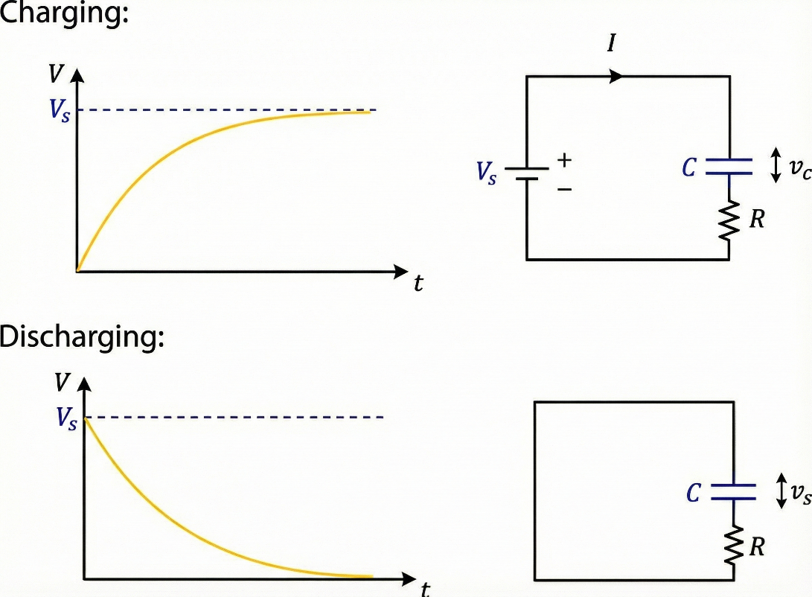
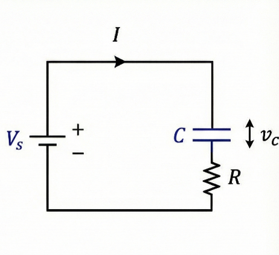
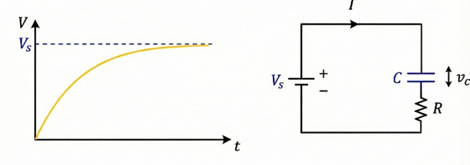
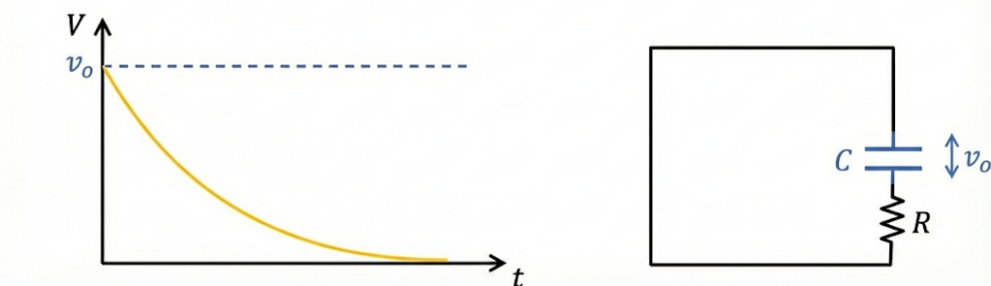

The Astable Multivibrator: Deriving the RC Charge and Discharge Equations
Multivibrators are switching circuits used to generate or maintain distinct output states. This article introduces the three categories of multivibrators, then focuses on the astable multivibrator by deriving the RC charging and discharging equations from Kirchhoff's voltage law, the time constant, and the origin of the 63.2% and 99.3% figures that every electronics engineer encounters.
Contents
Introduction
Before we dive in, let's look at the background of the multivibrator. Essentially, a multivibrator is an electronic switching circuit we use to generate or maintain two distinct states.
To break down the name, "multi" means more than one, and "vibrator" refers to something that moves back and forth—just like the physical vibration you're familiar with.
But what exactly is a "state change"? You've probably seen a pulse or square wave pattern before. In digital electronics, we deal with states like 0 and 1. Every transition from logic 0 to logic 1 (or vice versa) is called a state change.
Therefore, a circuit that is capable of changing its output states over time is called a multivibrator.
Categories of Multivibrators
According to the way these states change, we mainly divide multivibrators into three parts.
1. Astable Multivibrators
Astable multivibrators are one of the earliest timing and waveform-generation circuits. "Astable" means the opposite of "stable"; it means these multivibrators aren't stable in either state. If it changes to state 1, after a certain time it changes back to 0, and this continues without stopping. These are used to generate clock signals and PWM (Pulse Width Modulation) signals. While we don't use them exactly like this on modern computers for timing, their working principles are still very important.
2. Monostable Multivibrators
As the name "mono" suggests, this multivibrator is stable in only one state. When we give it an input pulse, it changes its state for a short time and then comes back to its original stable state. This has many applications, such as timing circuits, delays, and switch debouncing in digital systems. We won't go too deep into this because this article focuses mainly on the astable multivibrator.
3. Bistable Multivibrators
From the name, you can get the idea that it is stable in two states. But what does that mean? Think about flip-flops, the basic building blocks of memory. Once set to either logic state, it remains in that state until another triggering input changes it.
The main scope of this article is to give you a proper understanding of the astable multivibrator. Most articles cover this topic, but some points aren't explained well, leaving beginners marooned in a puzzle. Therefore, without wasting more words, let's dive into the "Hello World" of timing.
Before we begin, you need some kind of background knowledge about derivatives and integrals to understand the equations we build here.
Capacitor Charging and Discharging Equations
Before diving into the circuit diagram, we need to get fundamental knowledge first.
The Charge–Voltage Relationship
You all know about capacitors. A capacitor is a component that stores charge. The equation
(where Q is charge, C is capacitance, and V is voltage) describes the relationship between the stored charge and the voltage across the capacitor. When the charge and voltage change with respect to time, we can write the equation as
Nothing here to confuse; Q is written as a function of t because it changes over time.
So, capacitors play the main role in this circuit. If we take a capacitor and put it in parallel with a voltage source, it will charge. If we remove the source and put a conductor through it, it will discharge immediately. But it is different when we put a resistor in the circuit. The circuit diagram below shows how we insert a resistor, and the graph shows how the voltage across the capacitor varies over time.

Setting Up the RC Circuit Equation

So, if we consider the general situation—the simple capacitor-charging RC circuit shown above—we can write the equation using Kirchhoff's voltage law. It means "the directed sum of the potential differences (voltages) around any closed loop is zero." That's what the textbook says, and using that theory we can write the equation.
We just rewrite the equation because of the ease of understanding that current and capacitor voltage are changing over time. So, equation (1) can be rearranged like this:
(change the $v_{c}(t)$ to $v_{c}$ for understanding)
So $Q(t)$ gives the charge of the capacitor, and if we get the derivative of $Q(t)$ with respect to time $(t)$, it gives the current $I(t)$ flowing through the circuit. Let's substitute equation (3) into (2),
Solving the Differential Equation
To solve this differential equation, we use a technique called Separation of Variables. This allows us to group all voltage terms on one side and all the time terms on the other, as shown below (again changing $v_{c}(t)$ to $v_{c}$ for ease),
So after rearranging this equation, we can integrate both sides,
Now we must find the constant. As we all know, when $t = 0$, what should be the capacitor voltage? $t = 0$ is the starting voltage of the capacitor. If you are thinking it is always 0, it isn't—it can be any value at the start, so we get that as $v_{start}$. After substituting that, we get $c$ as,
And now we can rewrite equation (4) as,
The General RC Voltage Equation
This equation we derived gives how much time a simple RC circuit takes to go from one voltage to another voltage. I need to highlight this first: $v_{s}$ does not always mean the source voltage—instead, $v_{s}$ means the target voltage that the circuit tries to reach finally for equilibrium. Let's consider two situations: charging from 0 to $v_{s}$, and discharging from $v_{s}$ to 0.
$v_{s}$ in the equation above is the target (final) voltage the circuit settles toward—not necessarily the source supply voltage. This distinction is what lets the same equation describe both charging and discharging.
Charging Case

Applying the equation we derived,
Here the circuit tries to reach up to $v_{s}$, so $v_{s} = v_{s}$ and the starting capacitor voltage is 0, and since direction matters, both can be taken as positive. Substituting,
Discharging Case

In the same way, we apply the equation, but here the circuit tries to go to 0 V and is stable there, so $v_{s} = 0$, and since the capacitor charged up to $v_{s}$, $v_{start} = v_{0}$. Substituting into the equation,
The Time Constant (τ = RC)
You may have seen these two equations before, but you didn't know how we derive them, or you have derived them separately. And you have heard about the time constant $\tau$. Technically, this is the time it takes to charge around 63.2% in a simple RC circuit. Let's look at where it came from.
Let's apply this to the charging equation.
Hence, this proves that when time is $\tau = RC$, the voltage is approximately 0.6321 of the source voltage, or the voltage the circuit tries to reach—that is, near 63.2% of it. For the discharge case it gives 36.8%, which we can calculate the same way.
The Five-Time-Constant Rule
Some books say it takes approximately 5 time constants to fully charge the capacitor, so let's prove that one too.
When $t = 5RC$,
Which means approximately 99.3%.
Conclusion
Now you should have a much clearer picture of what an astable multivibrator really is. Instead of simply memorizing the charging and discharging equations, we started from the fundamentals, derived the general RC equation, and then used it to understand how the capacitors and transistors work together to produce continuous oscillations. Once you understand the mathematics behind capacitor charging and the switching behaviour of the transistors, the entire circuit becomes much more intuitive.
Although modern digital systems often use dedicated timer ICs or microcontrollers to generate clock signals, the astable multivibrator remains one of the best circuits for learning the fundamentals of timing, feedback, and transistor switching. The concepts you learned here form the foundation for understanding more advanced timing circuits and many other electronic systems.
I hope this article helped you see the astable multivibrator not as a circuit to memorize, but as one you can confidently analyze, derive, and explain on your own.